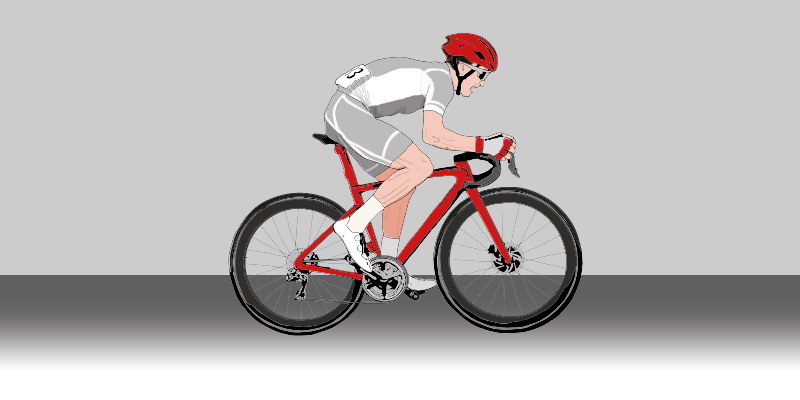
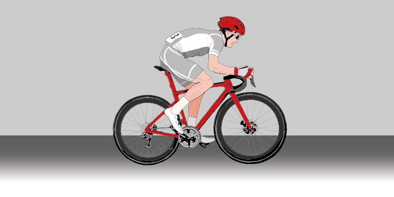

Ciclismo de competencia
El ciclismo en ruta se compite en los Juegos Panamericanos desde su primera edición en Buenos Aires 1951.
 

Cada año las principales carreras de ciclismo de ruta atraen a millones de espectadores y son disfrutadas por aficionados de todo el mundo. Los Juegos Panamericanos Santiago 2023 no son una excepción, se espera que miles de fanáticos lleguen para disfrutar de la competencia.
El ciclismo en ruta se compite en los Juegos Panamericanos desde su primera edición en Buenos Aires 1951.
Países con mayor cantidad total de medallas en prueba de ruta y contrarreloj.
Isla de Maipo es una zona agrícola conocida por su prestigioso cultivo de viñedos y frutas. Es una comuna con tradiciones 'huasas', conocida así por la destacada cultura chilena-campesina, reuniendo el campo con el desarrollo de la localidad. Sus paisajes varían entre predios, cerros y zonas de regadíos, pertenecientes a los brazos del Río Maipo, inspirando a los ciclistas durante la carrera.
El ciclismo en ruta es una disciplina que se disputa en carreteras asfaltadas al aire libre y consiste de dos pruebas: ruta individual y contrarreloj individual.
Es una prueba de largada colectiva, en que el primer ciclista en cruzar la línea de meta, tras cumplir con las vueltas establecidas, será el ganador de la prueba. La carrera se desarrollará en un circuito.
El equipo de los ciclistas esta regulado por la UCI (International Cycling Union), organización encargada de la correcta aplicación de las normas eticas y deportivas. El cumplimiento de las normas por parte de los deportistas facilita la equidad deportiva y la seguridad durante la competeción.

Para una transferencia de potencia y energía óptima, la parte más ancha del pie de un ciclista debe colocarse directamente sobre el eje del pedal. Para lograr esto, los ciclistas utilizan pedales automáticos que son más aerodinámicos que los pedales tradicionales.
Sería ideal si se usara una sola unidad de medida para ayudar a dimensionar las ruedas de las bicicletas, pero desafortunadamente, el mundo del ciclismo ofrece muchos giros y vueltas ilógicos. las tres medidas más usadas son la anglosajona, ERTO y francesa.
Conocer la medida de la rueda es importante ya que un ciclista puede calcular su avance minimo por pedaleada, por ejemplo una rueda 700x25C avanza 2,1 metros
El sistema anglosajon de pulgas solo se utiliza de referencia, no es demasiado fiable ya que no esta regulada y puede variar de un fabricante a otro.
ISO (ERTO)
25x622mm
Diametro llanta x ancho
ETRTO es un sistema moderno estandarizado a nivel europeo que se utiliza para distinguir neumáticos y llantas de diferentes tamaños. Tiene encuenta el diámetro interno del neumático.
Medida francesa
700x25C
Diametro neumatico x ancho
El sistema frances se expresa en milímetros, apesar de no estar regulada, es muy usada. Tiene en cuenta el diámetro exterior del neumático.
Es una prueba de largada individual, que comienza desde una rampa de salida en intervalos de tiempo idéntico para todos. El ciclista en registrar el menor tiempo será el ganador de la prueba.
La aerodinámica llevada a su máxima expresión, alcanzando velocidades entre 45 y 55 kilómetros por hora.
El equipamiento usado es similar el de ruta y debe cumplir con la misma reglamentación, las modificaciones son para ayudar con la aerodinamica del ciclista.
La técnica se basa en aplicar fuerza constante durante todo el ciclo, para lograr la máxima eficiencia en el movimiento.
Plato grande / piñón pequeño
Cubre mayor distancia, ideal para desensos rapidos y superficies planas.
Plato pequeño / piñón grande
Cubre menor distancia, ideal para trayectos de gran inclinación, cuestas y subidas.
Importante: la cadena NO debe quedar cruzada, para evitar cortes
Es el número de pedaladas que se dan en un minuto. Dicho de otra manera, las revoluciones por minuto (RPM) que damos al pedalear. Es un valor personal y no hay una regla específica que diga la cadencia exacta a la que debemos ir en bicicleta. Lo que sí es importante tener en cuenta es que la cadencia ideal, nos permite lograr la misma potencia, gastando menos energía.

Ciclista principiante normalmente acostumbra a obtener unas cadencias de entre 60 y 80 RPM

Ciclista profesionales tiene una media cercana a los 90 y 110 RPM